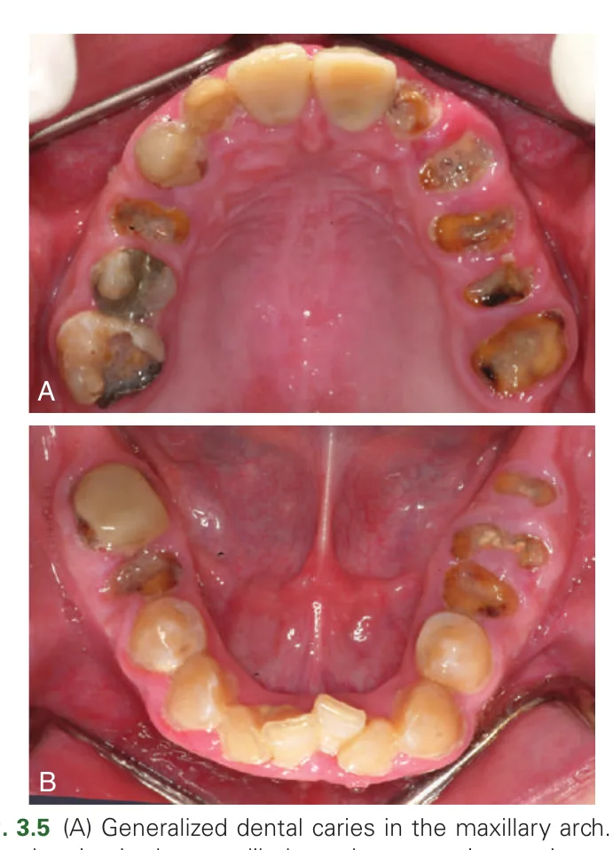

نسخه استخراجشده؛ ترجمه یا تأیید علمی انجام نشده است. وضعیت: captured
بهداشت دهان — یک پیششرط، نه یک توصیه. «بهداشت خوب پیششرط موفقیت هر درمان پروتزی است» و بیماران با بهداشت ضعیف باید دبریدمان جامع، جرمگیری و صافکردن سطح ریشه (SRP) بگیرند و آموزش تفصیلی ببینند که «باید بهطور دورهای در طول درمان تقویت شود».
و شرط شروع، صریح است: «درمان پروتز ثابت نباید آغاز شود تا زمانی که بیمار بتواند نشان دهد میتواند با دستورهای بهداشتی همراهی کند.» و بیماران ناهمراه «ممکن است بهتر باشد با پروتز متحرک موقت یا اصلاً بدون درمان مدیریت شوند تا زمانی که بهداشتشان کافی شود».
سیگار — و اینکه چه چیزهایی باید ثبت شوند: نوع مصرف (تنباکو، ویپ، ماریجوانا)، دفعات در روز و هفته، و شمار سالهای مصرف؛ و عادتهایی مثل تنباکوی جویدنی هم باید در نظر گرفته شود.
و چهار پیامد سیگار: خطر اثباتشدهی بیماری پریودنتال، کیفیت ضعیف استخوان، عوامل همراه پزشکی از جمله شکست ایمپلنت، و لکههای نیکوتین که زیبایی را به خطر میاندازد. بیماران باید دربارهی فواید ترک، خطر سرطان دهان، و «احتمال شکست زودرس درمان پروتزی» از پیش آگاه شوند.
پوسیدگی — و واقعیتی که کل طرح درمان روی آن سوار است: «ادبیات علمی نشان میدهد عارضهی اصلی درمان پروتز ثابت، پوسیدگی دندانی است.» و «پوسیدگی شدید، کنترااندیکاسیون درمان پروتز ثابت است».
و مسیر تصمیم در بیمار با پوسیدگی: همهی ترمیمهای موجود برداشته، پوسیدگی خارج، و سپس ارزیابی قابلیت ترمیم انجام میشود. در آن مرحله یکی از سه تصمیم گرفته میشود:
و دو تجویز عددی که باید بدانی: در بیماران با پوسیدگی، خمیردندان سدیم فلوراید ۱٫۱ درصد و دهانشویهی کلرهگزیدین گلوکونات ۰٫۱۲ درصد از آغاز درمان تجویز و در سراسر آن ادامه مییابد. و پیشنهاد میشود دندانپزشکان خمیردندان ۱٫۱ درصد را «بهعنوان یک رژیم مادامالعمر» پس از درمان پروتز ثابت پیچیده در نظر بگیرند.
و یک نکتهی مهم برای گرفتن رضایت آگاهانه: بیماران باید «پیش از شروع ارزیابی قابلیت ترمیم» دربارهی این گزینهها و هزینههای احتمالی و نیازهای درمانی افزوده آگاه شوند. یعنی نمیتوانی وسط کار بگویی «معلوم شد باید کشیده شود».

اینجا یک خطای ادراکی رایج هست: «در نبود بهداشت ضعیف یا تحرک دندان، بیماران اغلب وضعیت پریودنتال خود را «سالم» یا «قابل کار» میپندارند، و حتی دندانپزشکان ممکن است وسوسه شوند چنین دندانهایی را بهعنوان پایهی بریج به کار ببرند.»
و مهمتر: «اغلب، بیماران با بیماری پریودنتال ممکن است لزوماً بهداشت بدی نداشته باشند ولی همچنان برای حذف پاکتهای پریودنتال به درمان پریو نیاز دارند.» یعنی بهداشت خوب، به معنای نبود بیماری نیست.
و پنج عاملی که در ارزیابی دندان درگیر پریو باید سنجیده شوند:
و یک تعهد که باید پیشاپیش گرفته شود: اگر قرار است دندانهای درگیر پریو پایهی بریج شوند، بیماران باید دربارهی درمان و نگهداری پریودنتال مادامالعمر آموزش ببینند. و «بیمارانی که مایل به تعهد به چنین برنامههای سختگیرانهی نگهداری نیستند، باید گزینههای درمانی جایگزین به آنها ارائه شود».
و یک قاعدهی کلی: «بهطور کلی، دندانهایی با تحرک شدید نباید بهعنوان پایهی پروتز ثابت به کار روند.»
خط لبخند — و چرا اهمیتش با بقیه فرق دارد. نتایج زیبایی درمان پروتزی «قابل مشاهده، قابل قضاوت (توسط بیمار و دیگران) و ملموس» هستند. و مهمتر: «دندانپزشکان هیچ کنترلی بر خط لبخند بیمار ندارند و باید کار کنند تا ترمیمهایی در هماهنگی با خط لبخند او بسازند.»
چهار طبقه: لبخند پایین، متوسط، بالا، و لثهای.
و یک واقعیت جمعیتی که کار را سخت میکند: «قابل درک است که درمان پروتز ثابت در بیماران با لبخند پایین آسانتر مدیریت میشود، ولی بیشتر بیماران، صرفنظر از سنشان، لبخند متوسط یا بالا دارند — یعنی دستکم تا مولر اول ماگزیلا را نشان میدهند.»
و چرا لبخند بالا و لثهای سختتریناند؟ «به دلیل نمایان بودن کل مجموعهی دندانی-لثهای، از جمله هر لبهی روکش.» و دندانپزشکان باید هنگام انتخاب نوع ترمیم و جایگذاری لبهی تراش این را در نظر داشته باشند.
و یک ابزار ارتباطی: ثبت خط لبخند در فاز طراحی به دندانپزشک کمک میکند «بیمار را دربارهی اهمیت انتخابهای درمانی خاص برای بهبود نتیجهی زیبایی آموزش دهد» — و مجموعهای از عکسهای داخلدهانی و کل صورت، همزمان این آموزش و نگهداری سوابق درمانی درست را انجام میدهد.